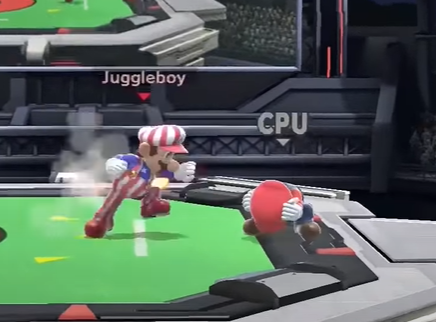
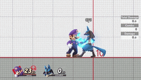
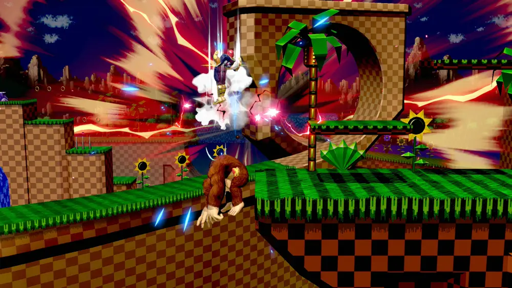
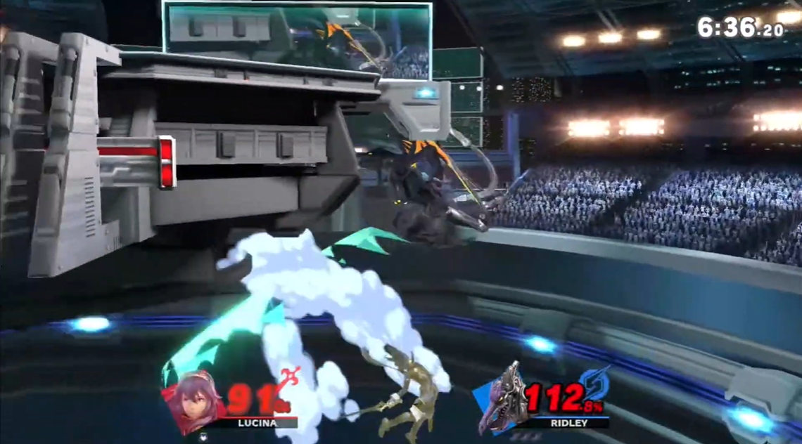

Otras mecánicas:
La siguiente sección será dedicada a otras mecánicas del juego importantes que afectan al gameplay.
Rabia:
Esta mecánica incrementa la potencia de los ataques (no el daño) de un personaje a medida que gana más o menos porcentaje de daño.
Es una característica que ayuda sobre todo a las eliminaciones, pero al ser la potencia de ataque más grande, es más complicado hacer combos

Es una característica que ayuda sobre todo a las eliminaciones, pero al ser la potencia de ataque más grande, es más complicado hacer combos
Escudo perfecto:

Se realiza soltando el botón de escudo justo cuando se recibe un ataque. De esta forma se ganan frames que pueden llegar a ser muy útiles para contraatacar.
Este parry es distinto al de las entregas de la saga anteriores, puesto que se realizaba presionando el boton de escudo en el momento perfecto.
Este parry es distinto al de las entregas de la saga anteriores, puesto que se realizaba presionando el boton de escudo en el momento perfecto.
Amortiguación:
Esta técnica es muy importante, ya que permite resistir el rebote contra una pared o contra el suelo. Si se amortigua en el suelo, es posible quedarse en el sitio o bien rodar hacia la izquierda o la derecha.
Cuando se amortigua contra la pared de un escenario se cancela toda la velocidad anterior haciendo que sea más sencillo volver al escenario.
|  |  |
Spike:
Un spike es un ataque que envía al oponente hacia abajo hasta que el retroceso termine. Un spike no debe de ser confundido con un smash meteórico, que también envía al oponente hacia abajo pero que puede ser cancelado antes de que el retroceso termine.
Este tipo de ataques son muy útiles para conseguir eliminaciones fuera del escenario. Una variación de este es el stage spike, que consiste en impulsar el enemigo hacia el escenario y rebotar hacia abajo, que puede ser evitado amortiguando.
|  |  |